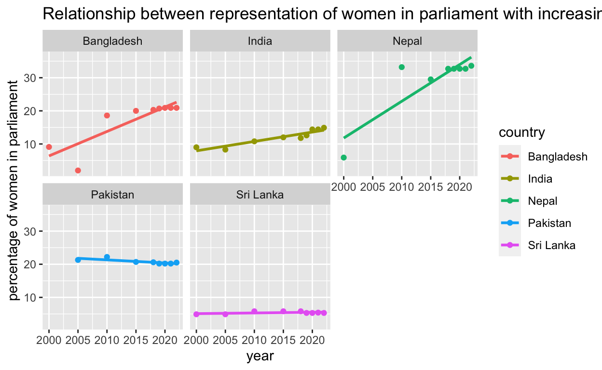

My final project
Is female representation in the parliament of a country a direct result of their ability to access education? The direct correlation between women’s representation in parliamentary bodies and their access to education is a well-documented and essential aspect of gender equality. Access to education equips women with the knowledge, skills, and confidence necessary to participate actively in the political sphere. Education can empower women to understand their rights, engage in public discourse, and navigate complex policy issues effectively. As women gain access to quality education, they are more likely to break through traditional gender roles and stereotypes, ultimately leading to increased female participation in political leadership positions, which is vital for a more equitable and representative democracy. My hypothesis is that as the access to education for women increases, their political representation in the parliament also increases. My sample consists of two data-sets from the United Nations Organisation about all the member countries’ seats held by women in the parliament and the gender ratio in access to education. For this project I have focused on South Asian countries namely India, Pakistan, Nepal, Bangladesh and Sri Lanka only. The goal is to determine whether there is a connection between access to education and political representation in the parliament in the context of women.
A reason why this project focuses on South Asian countries is because these are the set of countries with varying levels of all the factors that could potentially affect the connection that has been tried to achieve here. GDP of the country, equitable and easy access to the internet, increasing or decreasing crime rates, reservation quota for women in parliament or even schools, government expenditure on schools and education are all examples of factors that impact the relationship between access to education and political representation in the parliament. This is a problem of causality as all these varying levels serve as confounders to the research question. Therefore, to combat these issues and also show the impact such factors have on this relationship, this project draws a comparative analysis between the relationship of the two primary factors once without the confounders and then with the confounders with the help of the concept of regression.
The first dataset on seats held by women in parliament is loaded below. As mentioned above, it has been sourced from the United Nations Organization. It includes the percentage value of the seats held by women in parliament of different countries. It has further been filtered to only South Asian countries.
Description of variables is as follows:
region_country_area = country code as per the UN, country = name of the country, year = year when the data was recorded, series = statement explaining the “year” variable, last_election_date = date when the last election was held, value = percentage value of the seats held by women in parliament
This project only focuses on the usage of the country, year, and value variable.
library(tidyverse)
library(janitor)
df <- read_csv("SYB65_317_202209_Seats held by women in Parliament.csv", skip = 1) |>
janitor::clean_names() |>
rename(country = x2)
southasian_countries <- df |>
filter(country == "India"| country =="Pakistan"|country =="Sri Lanka"|country =="Bangladesh"|country=="Nepal")
ggplot(data = southasian_countries, mapping=aes(x=year, y=value, color = country, fill = country)) + geom_point() + geom_smooth(method = "lm", se = FALSE) + facet_wrap(~country) + labs(x = "year", y = "percentage of women in parliament", title = "Relationship between representation of women in parliament with increasing years") 
This plot displays the relationship between the representation of women in parliament in percentage and time in years in 5 different South Asian countries. Through this visualization it is evident that percentage representation of women in parliament of Bangladesh, India and Nepal has increased as years have passed. However, Pakistan and Sri Lanka do not show the same relationship. It is striking to note that while Sri Lanka has shown the slightest increase in women representation in the parliament, Pakistan has shown a decrease in the same over the years. Also, it is imperative to note that aside from India, that has shown a consistent growth in the representation of women in parliament over the years, Bangladesh and Nepal show a rather clustered scatterplot with the increment in years. The next step in this study is to determine the change in access to education levels over the same time interval in order to draw a conclusion to support my hypothesis.
The second dataset on ratio between girls and boys in primary, secondary and upper secondary is loaded below. It includes the ratio between girls and boys in different levels of education at school that will be helpful in drawing a conclusion for my hypothesis. It has further been filtered to only South Asian countries.
Description of variables is as follows:
region_country_area = country code as per the UN, country = name of the country, year = year when the data was recorded, series = breakdown of levels of education into primary, secondary and upper secondary, value = value of the ratio between girls to boys
daf <- read_csv("SYB65_319_202209_Ratio of girls to boys in education.csv", skip = 1) |>
janitor::clean_names() |>
rename(country = x2)
southasian_countries_edu <- daf |>
filter(country == "India"| country =="Pakistan"|country =="Sri Lanka"|country =="Bangladesh"|country=="Nepal")
ggplot(data = southasian_countries_edu, mapping=aes(x=year, y=value, color = series, fill = series)) + geom_point() +
geom_smooth(method = "lm", se = FALSE) + facet_wrap(~country) + theme_minimal() + theme(legend.position="bottom") + labs(x = "year", y = "value of ratio between girls and boys", title = "Relationship between ratio of girls and boys in different levels of education with increasing years") ##Discussion of this plot
This plot displays the relationship between the ratio of girls and boys in different levels of education and time in years in 5 different South Asian countries. Through this visualization it is evident that ratio of girls and boys in different levels of education in India, Pakistan and Nepal has increased as years have passed. However, Pakistan and Sri Lanka do not show the same relationship. It is striking to note that Sri Lanka has shown the slightest increase in ratio in primary education but a sharp decrease in secondary and upper secondary levels of education. Bangladesh observes a similar trend but in reverse. There is only a slight increase in ratio of girls and boys in primary level of education but a decent increase in secondary and upper secondary levels of education.
#Interpretation of the two plots together:
In order to support my hypothesis, I needed a direct correlation between the two variables plotted against “year”, that is, percentage value of the seats held by women in parliament and value of the ratio between girls to boys in different education levels. On comparing the two plots, it is concluded that a same trend can be observed for Bangladesh, India and Nepal. In the three countries mentioned, there is both, an increase in ratio between girls and boys in different levels of education and an increase in women in representation in the parliament. This clearly supports my hypothesis. In fact, even the trend observed for Sri Lanka supports my hypothesis to a certain extent as we see a decline in the ratio between girls and boys and a very faint change in increase in percentage of women in the parliament. However, on comparing the trend shown by Pakistan in the two plots we can see that even when there is an increase in the ratio of girls to boys in different education levels over the years, a decline can be seen in the percentage of women in the parliament. This leads one to the question of possible confounders that maybe stopping me from finding the same trend in all countries. Therefore, the next step is to counter the confounders.
education_graph <- southasian_countries_edu |>
select(country , year, series, value) |>
pivot_wider(names_from = series,
values_from = value)
education_graph# A tibble: 30 × 5
country year Ratio of girls to boys in…¹ Ratio of girls to bo…²
<chr> <dbl> <dbl> <dbl>
1 Bangladesh 2005 1.05 1.07
2 Bangladesh 2010 1.06 1.12
3 Bangladesh 2018 1.07 1.16
4 Bangladesh 2020 1.09 1.21
5 Bangladesh 2015 NA 1.13
6 Bangladesh 2019 NA 1.17
7 India 1995 0.83 0.65
8 India 2010 1.03 0.94
9 India 2015 1.12 1.02
10 India 2019 1.02 1.02
# ℹ 20 more rows
# ℹ abbreviated names:
# ¹`Ratio of girls to boys in primary education`,
# ²`Ratio of girls to boys in secondary education`
# ℹ 1 more variable:
# `Ratio of girls to boys in upper secondary education` <dbl>joined_data <- southasian_countries |>
left_join(education_graph , by = c("country", "year")) |>
rename(primary_education_ratio = "Ratio of girls to boys in primary education",
secondary_eductation_ratio = "Ratio of girls to boys in secondary education",
uppersecondary_education_ratio = "Ratio of girls to boys in upper secondary education",
women_seat_percent = "value") |>
select(country, year, women_seat_percent, primary_education_ratio, secondary_eductation_ratio, uppersecondary_education_ratio )
joined_data# A tibble: 43 × 6
country year women_seat_percent primary_education_ratio
<chr> <dbl> <dbl> <dbl>
1 Bangladesh 2000 9.1 NA
2 Bangladesh 2005 2 1.05
3 Bangladesh 2010 18.6 1.06
4 Bangladesh 2015 20 NA
5 Bangladesh 2018 20.3 1.07
6 Bangladesh 2019 20.7 NA
7 Bangladesh 2020 20.9 1.09
8 Bangladesh 2021 20.9 NA
9 Bangladesh 2022 20.9 NA
10 India 2000 9 NA
# ℹ 33 more rows
# ℹ 2 more variables: secondary_eductation_ratio <dbl>,
# uppersecondary_education_ratio <dbl>The two main confounders according to me are GDP of the country and number of people accessing the internet.
GDP is a measure of a country’s economic output. Higher GDP is associated with better economic development that influences both the representation of women in parliament and educational opportunities for girls. In more economically developed countries, there may be greater resources and opportunities for women to participate in politics and for girls to receive education.
Access to the internet can provide enhanced educational opportunities for both girls and boys. Additionally, the internet is a powerful tool for raising awareness and promoting empowerment. People who use the internet are conventionally more liberal and therefore may send their girl child to study in school. They are also more likely to promote and support women participation in politics and parliament. On the flip side, if there is a digital gender divide (unequal access to the internet based on gender), it might exacerbate existing gender disparities. This, in turn, could affect the representation of women in parliament and the gender ratio in high schools.
GDP <- read_csv("GDP per capita.csv", skip = 1) |>
janitor::clean_names() |>
rename(country = x2) |>
filter(country == "India"| country =="Pakistan"|country =="Sri Lanka"|country =="Bangladesh"|country=="Nepal",
series == "GDP per capita (US dollars)") |>
rename(gdp_per_capita = "value") |>
select(country, gdp_per_capita, year )
GDP# A tibble: 35 × 3
country gdp_per_capita year
<chr> <dbl> <dbl>
1 Bangladesh 321 1995
2 Bangladesh 409 2005
3 Bangladesh 829 2010
4 Bangladesh 1450 2015
5 Bangladesh 2111 2019
6 Bangladesh 2231 2020
7 Bangladesh 2450 2021
8 India 386 1995
9 India 713 2005
10 India 1346 2010
# ℹ 25 more rowsinternet_usage <- read.csv("Internet usage.csv", skip = 1)|>
filter(X == "India"| X =="Pakistan"|X =="Sri Lanka"|X =="Bangladesh"|X=="Nepal") |>
rename( percentage_individuals_using_internet = "Value",
country = "X",
year = "Year") |>
select(country, percentage_individuals_using_internet, year )
internet_usage country percentage_individuals_using_internet year
1 Bangladesh 0.1 2000
2 Bangladesh 0.2 2005
3 Bangladesh 3.7 2010
4 Bangladesh 12.9 2015
5 Bangladesh 27.8 2019
6 Bangladesh 32.9 2020
7 Bangladesh 38.9 2021
8 India 0.5 2000
9 India 2.4 2005
10 India 7.5 2010
11 India 14.9 2015
12 India 29.5 2019
13 India 43.4 2020
14 India 46.3 2021
15 Nepal 0.2 2000
16 Nepal 0.8 2005
17 Nepal 7.9 2010
18 Nepal 17.6 2015
19 Nepal 34.8 2019
20 Nepal 45.8 2020
21 Nepal 51.6 2021
22 Pakistan 6.3 2005
23 Pakistan 8.0 2010
24 Pakistan 11.0 2015
25 Pakistan 17.1 2019
26 Pakistan 18.9 2020
27 Pakistan 21.0 2021
28 Sri Lanka 0.6 2000
29 Sri Lanka 1.8 2005
30 Sri Lanka 15.3 2015
31 Sri Lanka 50.7 2019
32 Sri Lanka 59.2 2020
33 Sri Lanka 66.7 2021Description of variables of the confounder datasets:
Dataset 1 - GDP
country = name of the country, gdp_per_capita = GDP per capita of the country, year = year in which the GDP was calculated
Dataset 2 - internet usage
country = name of the country, percentage_individuals_using_internet = percentage of individuals in the entire population of the country using the internet, year = year in which the data was observed
#Result
regression <- lm(women_seat_percent ~ primary_education_ratio , data = joined_data)
regression2 <- lm(women_seat_percent ~ primary_education_ratio + secondary_eductation_ratio , data = joined_data)
regression3 <- lm(women_seat_percent ~ primary_education_ratio + secondary_eductation_ratio + uppersecondary_education_ratio , data = joined_data) | term | estimate | std.error | statistic | p.value |
|---|---|---|---|---|
| (Intercept) | 23.92524 | 22.36966 | 1.0695397 | 0.2982266 |
| primary_education_ratio | -7.84345 | 22.53031 | -0.3481289 | 0.7315708 |
library(modelsummary)
var_labels <- c(
"primary_education_ratio" = "new name"
) ##u can change names here
modelsummary(list(regression, regression2, regression3),
gof_map = c("nobs", "r.squared", "adj.r.squared"),
coef_map = var_labels) ##this will run and pass the new name and make table more organized| (1) | (2) | (3) | |
|---|---|---|---|
| new name | −7.843 | 9.358 | 9.067 |
| (22.530) | (49.638) | (52.078) | |
| Num.Obs. | 21 | 17 | 17 |
| R2 | 0.006 | 0.010 | 0.010 |
| R2 Adj. | −0.046 | −0.132 | −0.219 |
##Result section 1
##joining confounder 1
# A tibble: 43 × 7
country year women_seat_percent primary_education_ratio
<chr> <dbl> <dbl> <dbl>
1 Bangladesh 2000 9.1 NA
2 Bangladesh 2005 2 1.05
3 Bangladesh 2010 18.6 1.06
4 Bangladesh 2015 20 NA
5 Bangladesh 2018 20.3 1.07
6 Bangladesh 2019 20.7 NA
7 Bangladesh 2020 20.9 1.09
8 Bangladesh 2021 20.9 NA
9 Bangladesh 2022 20.9 NA
10 India 2000 9 NA
# ℹ 33 more rows
# ℹ 3 more variables: secondary_eductation_ratio <dbl>,
# uppersecondary_education_ratio <dbl>, gdp_per_capita <dbl>##joining confounder 2
possible_confounders <- confounders |>
left_join(internet_usage, by = c("country", "year"))
possible_confounders# A tibble: 43 × 8
country year women_seat_percent primary_education_ratio
<chr> <dbl> <dbl> <dbl>
1 Bangladesh 2000 9.1 NA
2 Bangladesh 2005 2 1.05
3 Bangladesh 2010 18.6 1.06
4 Bangladesh 2015 20 NA
5 Bangladesh 2018 20.3 1.07
6 Bangladesh 2019 20.7 NA
7 Bangladesh 2020 20.9 1.09
8 Bangladesh 2021 20.9 NA
9 Bangladesh 2022 20.9 NA
10 India 2000 9 NA
# ℹ 33 more rows
# ℹ 4 more variables: secondary_eductation_ratio <dbl>,
# uppersecondary_education_ratio <dbl>, gdp_per_capita <dbl>,
# percentage_individuals_using_internet <dbl>regression4 <- lm(women_seat_percent ~ primary_education_ratio + secondary_eductation_ratio + uppersecondary_education_ratio + gdp_per_capita + percentage_individuals_using_internet, data = possible_confounders)
summary(regression4)
Call:
lm(formula = women_seat_percent ~ primary_education_ratio + secondary_eductation_ratio +
uppersecondary_education_ratio + gdp_per_capita + percentage_individuals_using_internet,
data = possible_confounders)
Residuals:
Min 1Q Median 3Q Max
-16.188 -4.389 -1.324 5.593 11.643
Coefficients:
Estimate Std. Error t value
(Intercept) 25.802196 34.109363 0.756
primary_education_ratio -17.993671 62.189029 -0.289
secondary_eductation_ratio -69.512783 68.998035 -1.007
uppersecondary_education_ratio 91.314028 85.761538 1.065
gdp_per_capita -0.007220 0.008456 -0.854
percentage_individuals_using_internet 0.182572 0.457361 0.399
Pr(>|t|)
(Intercept) 0.474
primary_education_ratio 0.781
secondary_eductation_ratio 0.347
uppersecondary_education_ratio 0.322
gdp_per_capita 0.421
percentage_individuals_using_internet 0.702
Residual standard error: 9.392 on 7 degrees of freedom
(30 observations deleted due to missingness)
Multiple R-squared: 0.373, Adjusted R-squared: -0.07494
F-statistic: 0.8327 on 5 and 7 DF, p-value: 0.5651modelsummary(regression4)| (1) | |
|---|---|
| (Intercept) | 25.802 |
| (34.109) | |
| primary_education_ratio | −17.994 |
| (62.189) | |
| secondary_eductation_ratio | −69.513 |
| (68.998) | |
| uppersecondary_education_ratio | 91.314 |
| (85.762) | |
| gdp_per_capita | −0.007 |
| (0.008) | |
| percentage_individuals_using_internet | 0.183 |
| (0.457) | |
| Num.Obs. | 13 |
| R2 | 0.373 |
| R2 Adj. | −0.075 |
| AIC | 101.1 |
| BIC | 105.0 |
| Log.Lik. | −43.540 |
| RMSE | 6.89 |
##Result section 2
##Conclusion
Confounders = reservation quota, terrorism, public expenditur on education, internet usage, GDP per capita, general liberal mindset has imcreased
question: should i remove the NA data?, SE kam hoga toh better haina?